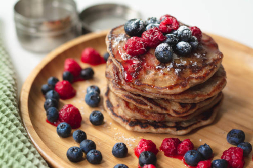

Protein Pancakes

Description
Quick and easy recipe for healthy Protein Pancakes. Great for breakfast!
Served as pictured, with blueberries and raspberries. Garnished with powdered sugar.
Ingredients
- 1 scoop protein powder of choice
- 1 1/2 cups all-purpose flour
- 3 1/4 teaspoons baking powder
- 1/4 teaspoon salt, or more to taste
- 1 tablespoon white sugar
- 1 1/4 cups milk
- 1 egg
- 3 tablespoons butter, melted
Optional
- 1/2 cup blueberries
- 1/2 cup raspberries
- Substitute either for fruit of choice
Steps
- Optional: Wash and dry fruit; set aside.
- In a large bowl, sift together the flour, baking powder, protein powder, salt and sugar. Make a well in the center and pour in the milk, egg and melted butter; mix until smooth.
- Heat a lightly oiled griddle or frying pan over medium-high heat. Pour or scoop the batter onto the griddle, using approximately 1/4 cup for each pancake.
- Cook until brown on each side and serve hot.
- Optional: Add fruit or topping of choice.